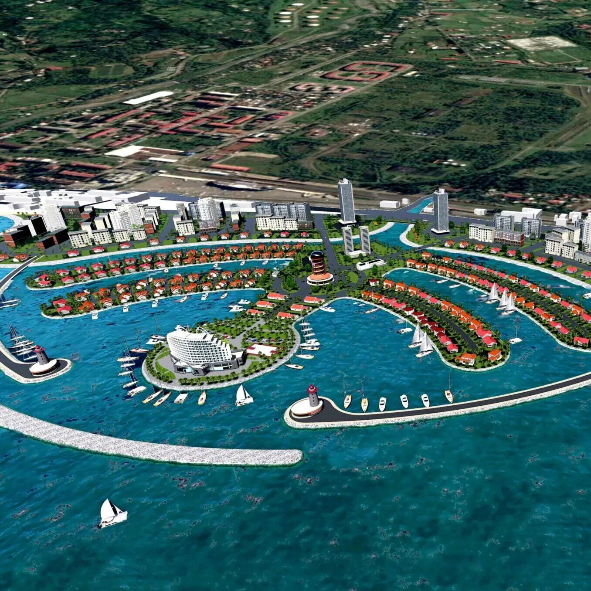
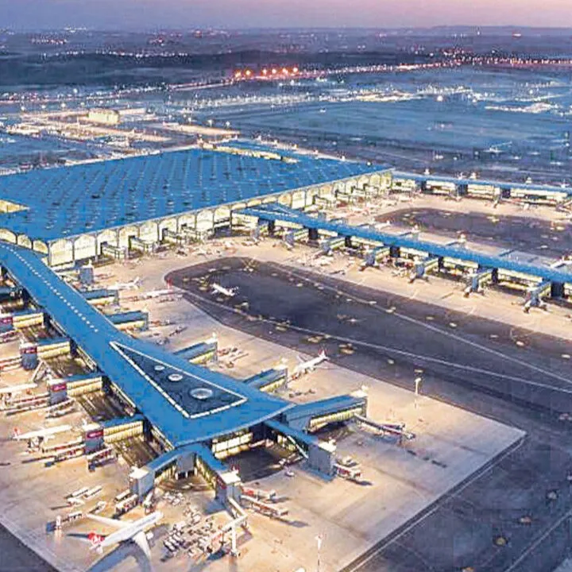
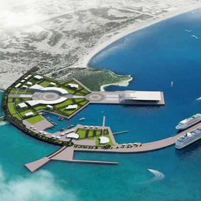
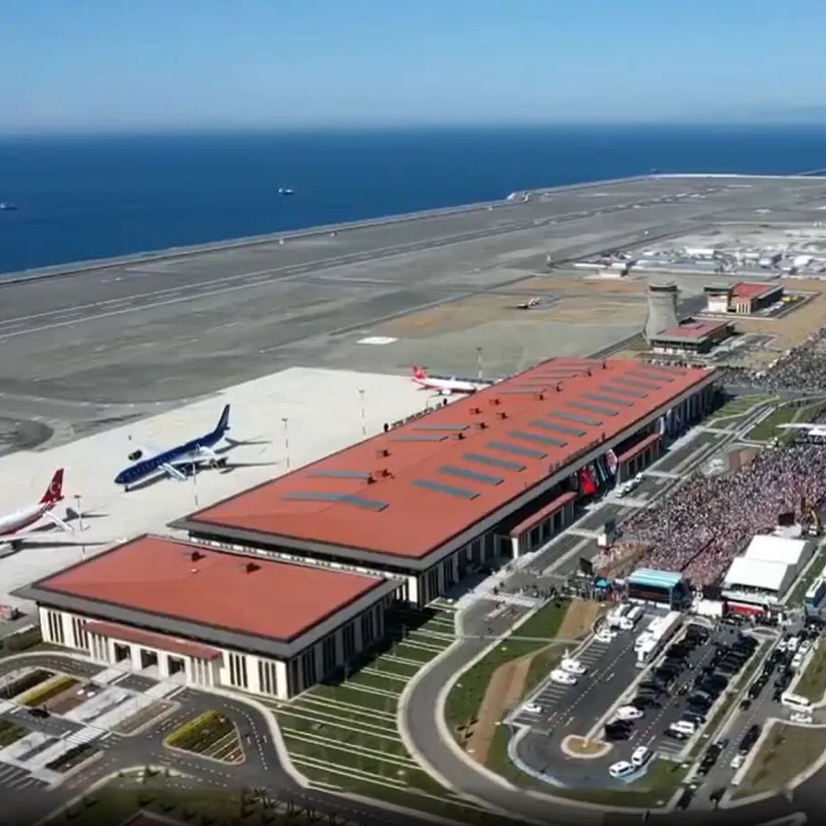

Ambassadori Batumi Island
Gürcistan'ın Batum şehrinde yapay ada projesi için kapsamlı deniz sondajı ve zemin etüdü çalışmaları gerçekleştirdik.
2023
Batum, Gürcistan

İstanbul Havalimanı
Dünyanın en büyük havalimanlarından biri için kıyı ve deniz sahası zemin etüdü çalışmaları.
2018
İstanbul, Türkiye

Antalya Kruvaziyer Limanı
Antalya'nın önemli kruvaziyer limanı projesi için deniz tabanı sondajları ve zemin etüdü çalışmaları.
2017
Antalya, Türkiye

Rize-Artvin Havalimanı
Türkiye'nin deniz dolgusu üzerine inşa edilen ikinci havalimanı projesinde kapsamlı zemin etüdü ve sondaj çalışmaları yürütüldü.
2021
Rize, Türkiye